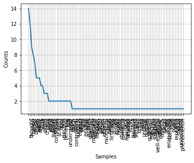

import ssl
ssl._create_default_https_context = ssl._create_unverified_context
import nltk
nltk.download('punkt')
nltk.download('stopwords')
import matplotlib.pyplot as plt
[nltk_data] Downloading package punkt to /Users/danigo/nltk_data...
[nltk_data] Package punkt is already up-to-date!
[nltk_data] Downloading package stopwords to
[nltk_data] /Users/danigo/nltk_data...
[nltk_data] Package stopwords is already up-to-date!
text = "The idea that human thoughts and emotions can affect the physical world is a topic of much debate and controversy. Some studies have suggested that human thoughts and emotions can have an impact on physical reality, while others have found no evidence to support this claim. One example of such a study is the work of Japanese scientist Masaru Emoto, who claimed that human consciousness can affect the molecular structure of water. He conducted experiments where water was exposed to different thoughts, emotions, and intentions, and then frozen and examined under a microscope. He claimed that water exposed to positive thoughts and emotions formed beautiful and symmetrical crystals, while water exposed to negative thoughts and emotions formed distorted and ugly crystals. However, these claims have been heavily criticized and challenged by the scientific community for their lack of rigor and reproducibility. Other studies that have attempted to replicate Emoto's findings have not been successful in finding any evidence of a connection between human thoughts and water crystals. Similarly, while it is true that electrons can behave like waves, it is unclear how this relates to the idea that human thoughts can affect physical outcomes. The behavior of electrons is governed by the laws of quantum mechanics, which describe the behavior of subatomic particles. While these laws are not fully understood, they are well-established and do not appear to be influenced by human thoughts or emotions. In conclusion, while some people believe that human thoughts and emotions can affect physical reality, there is little scientific evidence to support this claim. The relationship between human consciousness and the physical world is a complex and still poorly understood area of research, and more rigorous and controlled studies are needed to fully understand this phenomenon."
from nltk.tokenize import word_tokenize
tokens = word_tokenize(text)
from nltk.corpus import stopwords
stopwords = set(stopwords.words('english'))
filtered_tokens = [token for token in tokens if token.lower() not in stopwords]
from nltk.stem import PorterStemmer
stemmer = PorterStemmer()
stemmed_tokens = [stemmer.stem(token) for token in filtered_tokens]
from nltk import FreqDist
fdist = FreqDist(stemmed_tokens)
print(fdist.N())
print(fdist.B())
# fdist.hapaxes()
184
100
fdist.most_common()
[(',', 14),
('.', 12),
('thought', 9),
('human', 8),
('emot', 7),
('physic', 5),
('claim', 5),
('water', 5),
('affect', 4),
('studi', 4),
('evid', 3),
('expos', 3),
('crystal', 3),
('idea', 2),
('world', 2),
('realiti', 2),
('support', 2),
('emoto', 2),
('conscious', 2),
('form', 2),
('scientif', 2),
('rigor', 2),
('find', 2),
('electron', 2),
('behavior', 2),
('law', 2),
('fulli', 2),
('understood', 2),
('topic', 1),
('much', 1),
('debat', 1),
('controversi', 1),
('suggest', 1),
('impact', 1),
('other', 1),
('found', 1),
('one', 1),
('exampl', 1),
('work', 1),
('japanes', 1),
('scientist', 1),
('masaru', 1),
('molecular', 1),
('structur', 1),
('conduct', 1),
('experi', 1),
('differ', 1),
('intent', 1),
('frozen', 1),
('examin', 1),
('microscop', 1),
('posit', 1),
('beauti', 1),
('symmetr', 1),
('neg', 1),
('distort', 1),
('ugli', 1),
('howev', 1),
('heavili', 1),
('critic', 1),
('challeng', 1),
('commun', 1),
('lack', 1),
('reproduc', 1),
('attempt', 1),
('replic', 1),
("'s", 1),
('success', 1),
('connect', 1),
('similarli', 1),
('true', 1),
('behav', 1),
('like', 1),
('wave', 1),
('unclear', 1),
('relat', 1),
('outcom', 1),
('govern', 1),
('quantum', 1),
('mechan', 1),
('describ', 1),
('subatom', 1),
('particl', 1),
('well-establish', 1),
('appear', 1),
('influenc', 1),
('conclus', 1),
('peopl', 1),
('believ', 1),
('littl', 1),
('relationship', 1),
('complex', 1),
('still', 1),
('poorli', 1),
('area', 1),
('research', 1),
('control', 1),
('need', 1),
('understand', 1),
('phenomenon', 1)]
import matplotlib.pyplot as plt
fdist.plot()

<Axes: xlabel='Samples', ylabel='Counts'>